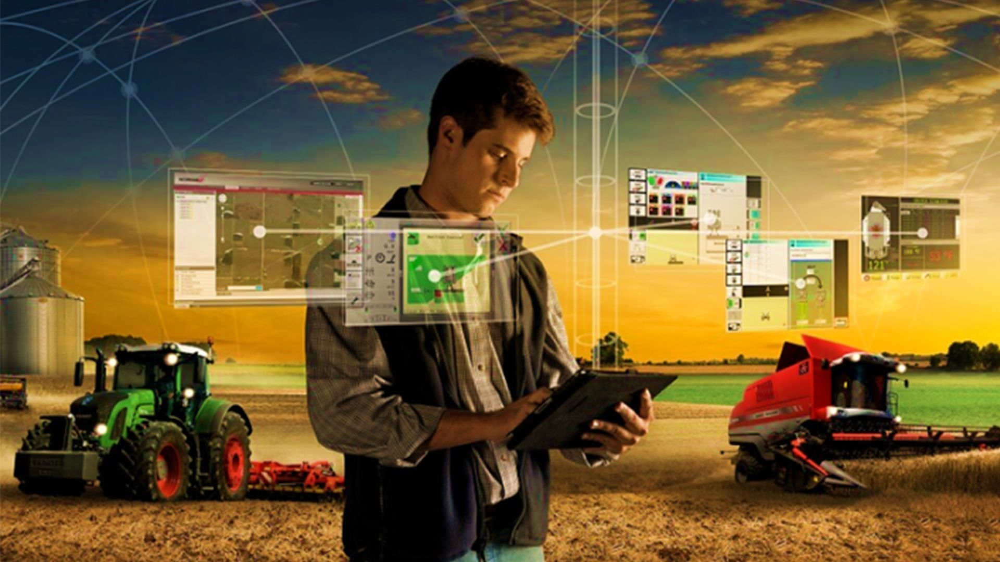

É muito simples explicar o que é esse novo olhar sobre a agricultura. Suponha que você tivesse máquinas inteligentes que fossem capazes de identificar as necessidades específicas de plantio em cada parte da propriedade por meio de dados obtidos no campo.
É possível fazer isso por meio de um sistema de GPS, por exemplo, que sabe exatamente o local da semente a ser plantada para que não haja sobreposição e para que herbicidas e irrigação sejam aplicados corretamente.
De modo geral, a Agricultura de Precisão refere-se a uma série de sistemas que utilizam os dados coletados no campo para promover o manuseio da plantação mais eficiente e certeiro. Mas não é só isso: as tecnologias permitem uma visão mais ampla de sistema produtivo, otimizando o uso de insumos, o que consequentemente atua no aumento da lucratividade e sustentabilidade, minimizando impactos ambientais como um todo.
Copyright © 2024 blog do agronegocio